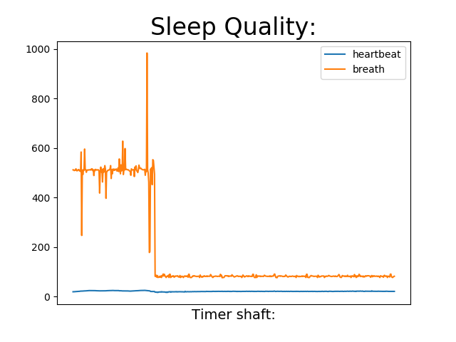

用户在这个界面可以清晰直观地观测到有关呼吸和心跳的数据，由蓝色和橙色两条折线组成，美观大方又简洁明了，折线的形式可以更直接地对比出数据的增减趋势，方便使用者及时接收讯息，也方便专业人士通过传感器数据分析睡眠质量。
1. 打开IDLE (Python 3.7)(下载python)
2. 依次选择File→Open，选择“Auto_blinder.py”，并且保持要分析的记录文件与Auto_blinder.py在同一个文件夹内。
3. 选择之后便会弹出源文件内容。依次选择Run→Run Module。
4. Python shell会弹出，并提示请您输入要分析的记录名。
5. 输入要分析的睡眠质量记录，例如“Test.txt”。
6. 按Enter键提交之后即可看到分析记录。

链接：https://pan.baidu.com/s/1EddipxmScv7bFqB8v5eL2Q
提取码：qd5v